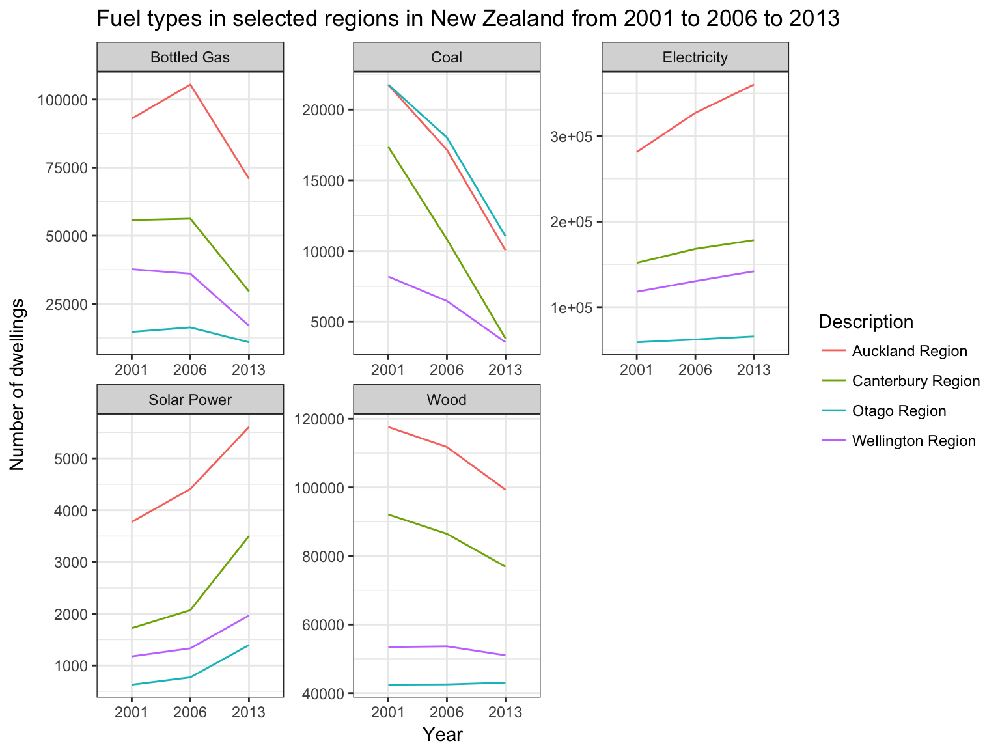

get-going-nzcensr.RmdThe nzcensr package is mainly a data package to make it easy to import the New Zealand Census data as either normal or spatial dataframes without having to download the data for each project and perform different joins. The package contains the following data sets:
| dataset | description |
|---|---|
| dwelling_area_units | Dwelling data set at the area unit level |
| dwelling_local_boards | Dwelling data set at the local board level |
| dwelling_meshblocks | Dwelling data set at the meshblock level |
| dwelling_regions | Dwelling data set at the regional level |
| dwelling_tas | Dwelling data set at the territorial authority level |
| family_area_units | Family data set at the area unit level |
| family_local_boards | Family data set at the local board level |
| family_meshblocks | Family data set at the meshblock level |
| family_regions | Family data set at the regional level |
| family_tas | Family data set at the territorial authority level |
| household_area_units | Household data set at the area unit level |
| household_local_boards | Household data set at the local board level |
| household_meshblocks | Household data set at the meshblock level |
| household_regions | Household data set at the regional level |
| household_tas | Household data set at the territorial authority level |
| individual_part_1_area_units | Individual (Part 1) data set at the area unit level |
| individual_part_1_local_boards | Individual (Part 1) data set at the local board level |
| individual_part_1_meshblocks | Individual (Part 1) data set at the meshblock level |
| individual_part_1_regions | Individual (Part 1) data set at the regional level |
| individual_part_1_tas | Individual (Part 1) data set at the territorial authority level |
| individual_part_2_area_units | Individual (Part 2) data set at the area unit level |
| individual_part_2_local_boards | Individual (Part 2) data set at the local board level |
| individual_part_2_meshblocks | Individual (Part 2) data set at the meshblock level |
| individual_part_2_regions | Individual (Part 2) data set at the regional level |
| individual_part_2_tas | Individual (Part 2) data set at the territorial authority level |
| individual_part_3a_area_units | Individual (Part 3A) data set at the area unit level |
| individual_part_3a_local_boards | Individual (Part 3A) data set at the local board level |
| individual_part_3a_meshblocks | Individual (Part 3A) data set at the meshblock level |
| individual_part_3a_regions | Individual (Part 3A) data set at the regional level |
| individual_part_3a_tas | Individual (Part 3A) data set at the territorial authority level |
| individual_part_3b_area_units | Individual (Part 3B) data set at the area unit level |
| individual_part_3b_local_boards | Individual (Part 3B) data set at the local board level |
| individual_part_3b_meshblocks | Individual (Part 3B) data set at the meshblock level |
| individual_part_3b_regions | Individual (Part 3B) data set at the regional level |
| individual_part_3b_tas | Individual (Part 3B) data set at the territorial authority level |
At present, it only has two functions:
Let’s explore the dwelling data set at the regional level.
library(nzcensr)
# Read in data
dwelling_regions_long <- read_nz_census_data(dwelling_regions,
long = TRUE,
replace_confidential_values = NA_integer_,
include_gis = FALSE)
knitr::kable(head(dwelling_regions_long))| Area_Code_and_Description | Code | Description | variable | value |
|---|---|---|---|---|
| 01 Northland Region | 01 | Northland Region | 2001_Census_dwelling_record_type_for_occupied_dwellings_Occupied_Non-private_Dwelling | 471 |
| 02 Auckland Region | 02 | Auckland Region | 2001_Census_dwelling_record_type_for_occupied_dwellings_Occupied_Non-private_Dwelling | 1548 |
| 03 Waikato Region | 03 | Waikato Region | 2001_Census_dwelling_record_type_for_occupied_dwellings_Occupied_Non-private_Dwelling | 843 |
| 04 Bay of Plenty Region | 04 | Bay of Plenty Region | 2001_Census_dwelling_record_type_for_occupied_dwellings_Occupied_Non-private_Dwelling | 528 |
| 05 Gisborne Region | 05 | Gisborne Region | 2001_Census_dwelling_record_type_for_occupied_dwellings_Occupied_Non-private_Dwelling | 114 |
| 06 Hawke’s Bay Region | 06 | Hawke’s Bay Region | 2001_Census_dwelling_record_type_for_occupied_dwellings_Occupied_Non-private_Dwelling | 342 |
Nice and easy! This call brings in the following dataset having set confidential values to NA, wihtout including the GIS geometry and in the ‘long’ firmat. This make for easy plotting in ggplot2. Let’s clean and extract th columns we have so that we can have a look at some of the fuel types used in four regions in New Zealand: Auckland, Wellington, Canterbury and Otago.
library(tidyverse)
# Clean data and variable names
fuel_types_regions <- dwelling_regions_long %>%
filter(str_detect(variable, "Census_fuel_types_used_to_heat_dwellings_.*_for_occupied_private_d")) %>%
mutate(variable = str_replace(variable, "_Census_fuel_types_used_to_heat_dwellings_\\(total_responses\\)\\(4\\)_for_occupied_private_dwellings_", "splithere") %>%
str_replace_all("_", " ")) %>%
separate(variable, into = c("year", "fuel_type"), sep = "splithere", remove = TRUE )
# Select desired regions and fuel types
fuel_types_regions_selected <- fuel_types_regions %>%
filter(fuel_type %in% c("Bottled Gas", "Coal", "Electricity", "Solar Power", "Wood"),
Description %in% c("Auckland Region", "Canterbury Region", "Wellington Region", "Otago Region"))
knitr::kable(head(fuel_types_regions))| Area_Code_and_Description | Code | Description | year | fuel_type | value |
|---|---|---|---|---|---|
| 01 Northland Region | 01 | Northland Region | 2001 | Bottled Gas | 14658 |
| 02 Auckland Region | 02 | Auckland Region | 2001 | Bottled Gas | 92976 |
| 03 Waikato Region | 03 | Waikato Region | 2001 | Bottled Gas | 40086 |
| 04 Bay of Plenty Region | 04 | Bay of Plenty Region | 2001 | Bottled Gas | 30132 |
| 05 Gisborne Region | 05 | Gisborne Region | 2001 | Bottled Gas | 5067 |
| 06 Hawke’s Bay Region | 06 | Hawke’s Bay Region | 2001 | Bottled Gas | 22263 |
Right, let’s plot it over time.
ggplot(fuel_types_regions_selected, aes(x = year, y = value, color = Description, group = Description)) +
geom_line() +
facet_wrap(~fuel_type, scales = "free") +
ggtitle("Fuel types in selected regions in New Zealand from 2001 to 2006 to 2013") +
xlab("Year") +
ylab("Number of dwellings") +
theme_bw()